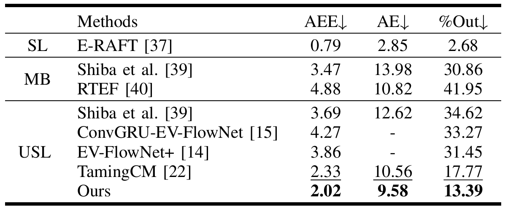
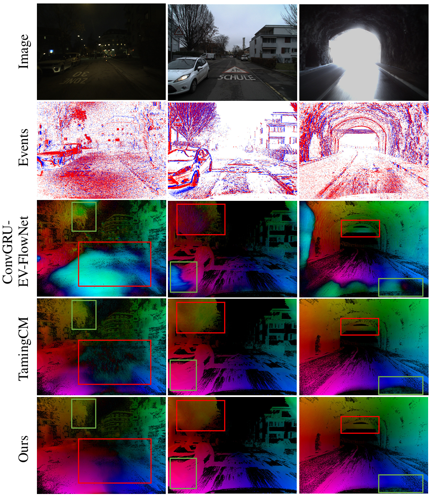
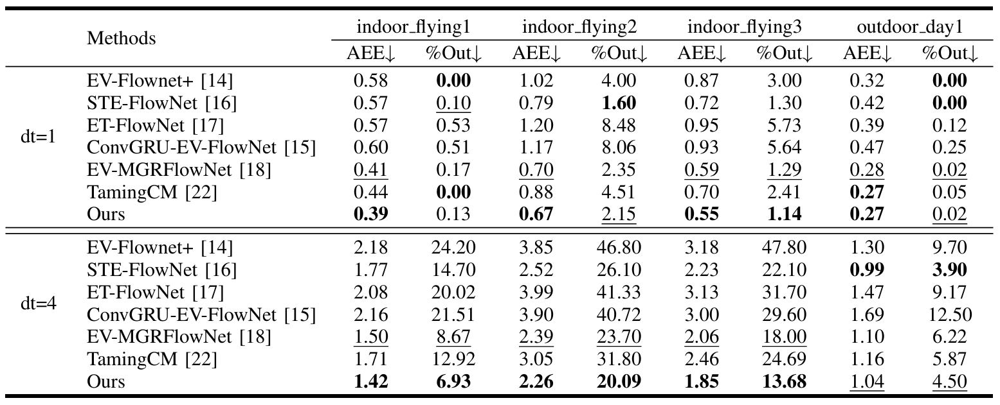
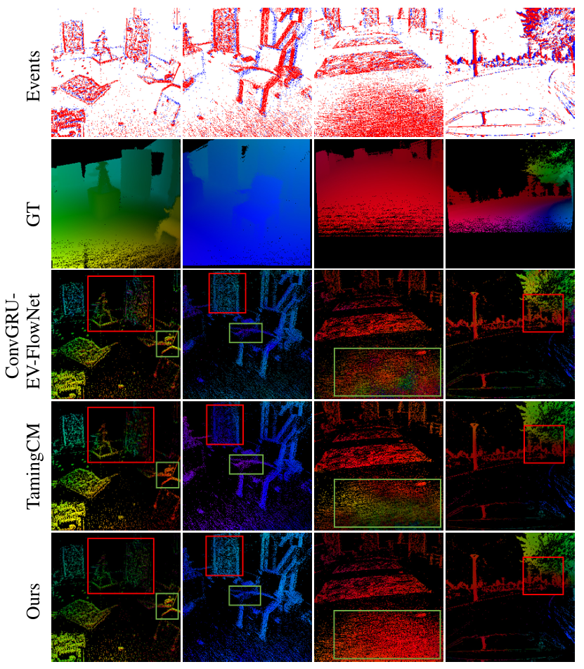
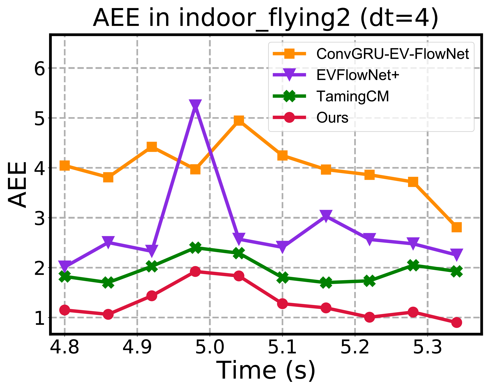
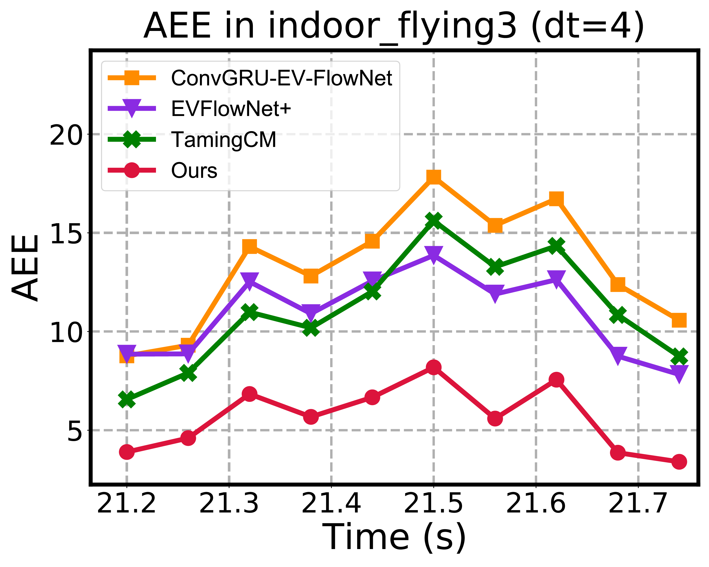
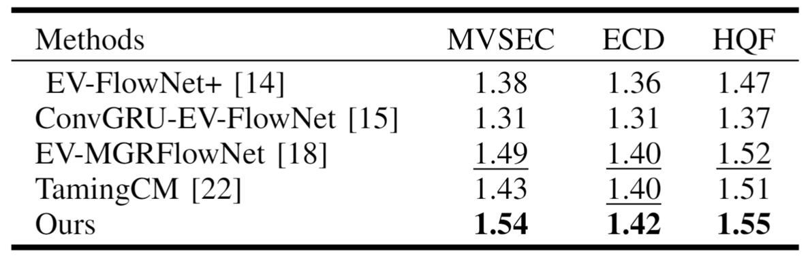

Abstract
Event cameras have the potential to capture continuous motion information over time and space,
making them well-suited for optical flow estimation. However, most existing learning-based methods
for event-based optical flow adopt frame-based techniques, ignoring the spatio-temporal characteristics of events.
Additionally, these methods assume linear motion between consecutive events within the loss time window,
which increases optical flow errors in long-time sequences.
In this work, we observe that rich spatio-temporal information and accurate nonlinear motion between events are crucial
for event-based optical flow estimation. Therefore, we propose E-NMSTFlow, a novel unsupervised event-based optical flow
network focusing on long-time sequences. We propose a Spatio-Temporal Motion Feature Aware (STMFA) module
and an Adaptive Motion Feature Enhancement (AMFE) module, both of which utilize rich spatio-temporal information
to learn spatio-temporal data associations. Meanwhile, we propose a nonlinear motion compensation loss that utilizes
the accurate nonlinear motion between events to improve the unsupervised learning of our network. Extensive experiments
demonstrate the effectiveness and superiority of our method. Remarkably, our method ranks first
among unsupervised learning methods on the MVSEC and DSEC-Flow datasets.
Evaluation on DSEC-Flow
For DSEC-Flow, we train our model on the official training set and evaluate it on the DSEC-Flow benchmark.

To prove the superiority of our method in long-time sequences, we accumulate the average estimated optical flow
within a time window of 0.1s. The accumulated optical flow results on DSEC-Flow are shown in Fig.
Our results appear smoother and more accurate near image boundaries, which prove the superiority
of our method in long-time sequences.

Evaluation on MVSEC
For MVSEC, considering the generalization of our network for complex scenes,
we follow previous works and train our network on the UZH-FPV drone racing dataset.
Then, we test it on four different sequences from the MVSEC dataset with ground truth
corresponding to a time interval of dt=1 and dt=4 gray images.

We also give qualitative results for dt=4, where we compare our method with state-of-the-art unsupervised methods.
Specifically, the results for dt=4 reflect the performance of our network in longer-time sequences,
which fully proves the effectiveness of our method.

To further demonstrate the excellent performance of our method, we compare the performance in challenging scenes
(sudden turns of the drone) from indoor flying sequences (MVSEC) with other methods. Specifically,
a lower AEE indicates that the estimated optical flow is more accurate.
The results show that we achieve better performance in challenging scenes, proving the superiority of our method.


More Evaluation - FWL (Flow Warp Loss) results on MVSEC, ECD and HQF datasets
Due to space constraints in the paper, we did not present FWL results on MVSEC, ECD and HQF datasets.
We provide FWL results here, and FWL is an optical flow evaluation metric, which does not require ground truth flow.

Acknowledgements:
We borrow this template from SD+DINO, which is originally from DreamBooth.